Рассмотрены базовые возможности PostGIS
Использование связки PostgreSQL/PostGIS предоставляет довольно широкие возможности по работе с пространственными данными, однако широкого распространения этот союз до сих пор не получил. Одной из причин такого положения вещей можно считать практически полное отсутствие информации о PostGIS на русском языке. Данная статья призвана отчасти восполнить этот пробел. В ней мы рассмотрим основы работы с PostGIS, в частности будет описан процесс выгрузки данных из shapе-файла в СУБД PostgreSQL. Предполагается, что у вас на компьютере уже установлены PostgreSQL/PostGIS и создана пространственная база данных. Если же это ещё не выполнено, то рекомендуем обратиться к статье "Установка PostgreSQL/PostGIS для Windows". Дополнительную информацию о PostGIS можно получить в руководстве пользователя PostGIS на русском языке.
Оглавление
При создании пространственной базы данных автоматически создаются две таблицы метаданных - SPATIAL_REF_SYS и GEOMETRY_COLUMNS. Они создаются в соответствии со спецификацией «Open Geospatial Consortium Simple Features for SQL specification», выпущенной OGC и описывающей стандартные типы объектов ГИС, функции для манипуляции ими и набор таблиц метаданных.
Таблица GEOMETRY_COLUMNS хранит информацию о таблицах базы данных, содержащих пространственную информацию. Её заполнение осуществляется вручную, либо как следствие выполнения специальной процедуры OGC AddGeometryColumn().
Таблица SPATIAL_REF_SYS содержит числовые идентификаторы и текстовые описания систем координат, используемых в пространственной базе данных. Одним из полей этой таблицы является поле SRID – уникальный идентификатор, однозначно определяющий систему координат. SRID представляет из себя числовой код, которому соответствует некоторая система координат. Например, распространенный код EPSG 4326 соответствует географической системе координат WGS84.
Более подробную информацию по таблицами метаданных можно найти в руководстве по PostGIS.
В данном и последующих разделах все примеры будут рассмотрены для созданной в статье "Установка PostgreSQL/PostGIS для Windows" базы данных «postgis».
Попытаемся создать таблицу, содержащую пространственные данные и применить к ним функции PostGIS. Вставьте нижеприведенный запрос в окно запросов SQL и нажмите кнопку «Выполнить запрос» .
create table points ( pt geometry, name varchar );
insert into points values ( 'POINT(0 0)', 'Origin' );
insert into points values ( 'POINT(4 0)', 'X Axis' );
insert into points values ( 'POINT(0 3)', 'Y Axis' );
select name, ST_AsText(pt), ST_Distance(pt, 'POINT(4 3)') from points;
В данном примере мы создали таблицу points, содержащую два поля: поле pt типа geometry и поле name типа varchar, после чего добавили (insert) в нее три записи, содержащих информацию о точках. Затем осуществили выборку с использованием функций PostGIS: ST_Distance() и ST_AsText(). В качестве параметра обе функции используют объект типа geometry. Функция ST_Distance() рассчитывает расстояние между двумя указанными точками плоскости, а ST_AsText() возвращает геометрию объекта в текстовом формате WKT (Well-Known Text). Формат WKT включает информацию о типе объекта и координаты, составляющие объект.
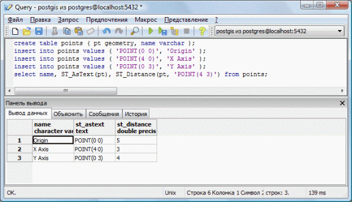
В данном разделе мы попытаемся наполнить нашу пространственную базу данными импортировав их из shape-файла. Для этого сначала преобразуем данные из shape-файла в формат понятный PostgreSQL с помощью утилиты shp2pgsql, а затем загрузим их в базу данных. Наши данные хранятся в географической системе координат WGS84, для которой SRID имеет значение 4326. При переводе данных из shape-файлы мы укажем это значение в качестве параметра утилиты shp2pgsql . Будем загружать в базу данных файл bnd-political-boundary-a.shp (часть набора данных VMap0). Составляем небольшой командный bat-файл, содержащий следующие строки:
SET PATH="C:\Program Files\PostgreSQL\8.3\bin" shp2pgsql -i -D -s 4326 bnd-political-boundary-a.shp bnd-political-boundary-a > bnd-political-boundary-a.sql psql -U postgres -f bnd-political-boundary-a.sql -d postgis
Данный набор команд осуществляет конвертацию (shp2pgsql создает файл sql) и загрузку данных в БД (psql).
Для того, чтобы добавить данные к существующей БД, можно использовать ключ -a, при этом схемы существующей БД и загружаемых данных должны совпадать.
Далее вводим пароль для пользователя postgres, открываем нашу базу данных и убеждаемся в том, что все данные были успешно загружены. Для этого в pgAdmin заходим в: «Базы/postgis/Схемы/public/Таблицы», щелкаем правой кнопкой мыши и в контекстном меню выбираем «Обновить», после чего в списке таблиц должна появиться загруженная нами таблица bnd-political-boundary-a.
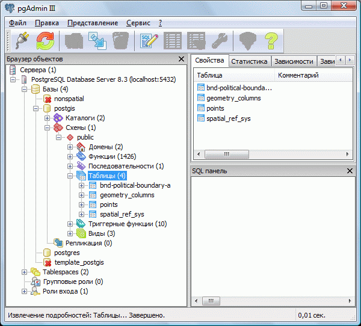
Утилита shp2pgsql имеет множество ключей, некоторые из которых могут оказаться очень полезными:
Ключ |
Описание |
|---|---|
-D |
Использовать формат «database dump». По умолчанию используется формат «insert», заставляющий базу данных анализировать каждую строку загружаемого файла. Формат «database dump» не требует подобного анализа, вследствие чего загрузка файла осуществляется значительно быстрее. |
-s <#> |
Использовать SRID. Параметр SRID необходим при осуществлении перепроецирования внутри базы данных. |
-i |
Использовать 32-битные целые числа для всех значений типа integer. Необходимость этого параметра объясняется тем, что, иногда, в заголовках dbf-файлов указан размер поля гораздо больше, чем используется на самом деле. |
-W <encoding> |
Кодировка. |
-a |
Использовать режим добавления. Применяется в случае добавления данных в существующую таблицу. |
А теперь рассмотри ключи клиента PostgreSQL psql, которые мы использовали при загрузке данных:
Ключ |
Описание |
|---|---|
-U <username> |
Учетная запись, от имени которой идет подключение к базе данных. |
-f <filename> |
Имя файла, который требуется выполнить. |
-d <database> |
Имя базы данных, в которую следует загрузить результат выполнения файла. |
Для просмотра данных PostGIS существует множество программ, одной из которых является QGIS. На примере QGIS мы и рассмотрим работу со слоями PostGIS. Запускаем QGIS и выбираем: «Layer/Add a PostGIS Layer». В открывшемся окне нажимаем кнопку «New» и задаем параметры нового соединения:
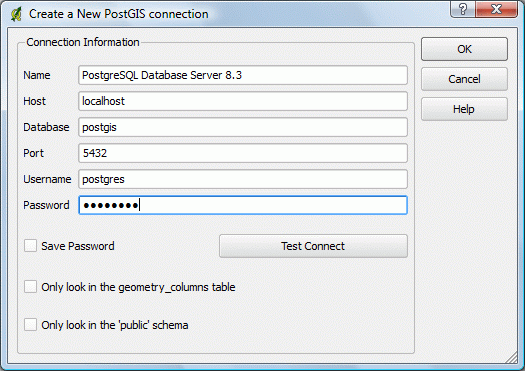
Name – имя сервера к которому устанавливается подключение, его можно посмотреть в браузере объектов pgAdmin. Если вы не меняли его, то по умолчанию используется имя PostgreSQL Database Server 8.3.
Host – адрес хоста на котором расположена база данных. Поскольку мы работаем с базой данных локально, то в этом поле указываем localhost.
Port – порт на котором расположен сервис PostgreSQL, по умолчанию 5432.
Username – имя пользователя базы данных, в нашем случае имя суперпользователя.
Password – пароль.
После того как все поля будут заполнены, жмем «Test Connect». В случае, если подключение установлено вы увидите сообщение:
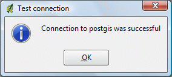
Закрываем это окно, а в окне «Create a New PostGIS connection» нажимаем «OK». Далее выбираем созданное подключение, жмем «Connect» и снова вводим пароль на подключение к базе данных, после чего появляется окно:
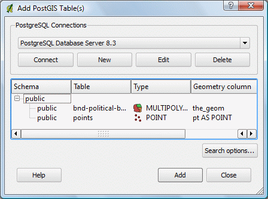
Выбираем слой (таблицу) bnd-political-boundary-a, жмем «Add» и выбранный слой будет загружен в окно QGIS. После чего с ним можно работать точно также, как и с обычным слоем, созданным из shape-файла.
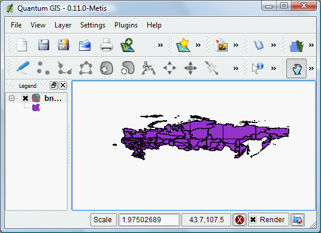
Индексы имеют большое значение при работе с таблицами, хранящими пространственную информацию. Их использование позволяет значительно увеличить скорость выполнения запросов (подробнее о индексах). Поэтому попытаемся разобраться с тем, что они из себя представляют и как с ними работать.
Индексы в PostGIS представлены в виде R-дерева (R-Tree), реализованного как частный случай обобщенного поискового дерева (GiST). Пример R-дерева представлен на следующем рисунке:
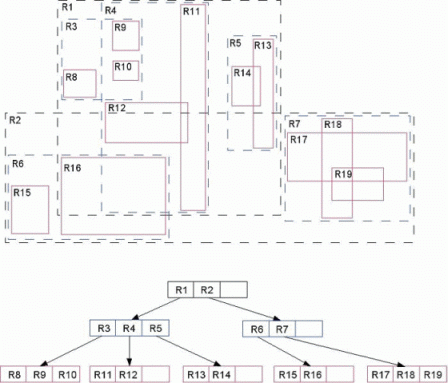
Эта структура данных разбивает пространство на множество иерархически вложенных и, возможно, пересекающихся прямоугольников (для двумерного пространства). В случае трехмерного или многомерного пространства это будут прямоугольные параллелепипеды (кубоиды) или параллелотопы. Алгоритмы вставки и удаления используют эти ограничивающие прямоугольники для обеспечения того, чтобы «близкорасположенные» объекты были помещены в одну вершину дерева. В частности, новый объект попадет в ту вершину, для которой потребуется наименьшее расширение ее ограничивающего прямоугольника. Каждый элемент листовой вершины хранит два поля данных: способ идентификации данных, описывающих объект (либо сами эти данные) и ограничивающий прямоугольник этого объекта.
Создание пространственных индексов
Проиндексируем таблицу political-boundary-a нашей базы данных. Для этого в окне запросов SQL выполним команду:
CREATE INDEX "bnd-political-boundary-a-index" ON "bnd-political-boundary-a" USING GIST (the_geom);
После этого, если перейти в: «Таблицы/ bnd-political-boundary-a/Индексы» и нажать «Обновить», то среди списков индексов появится вновь созданный индекс bnd-political-boundary-a-index.
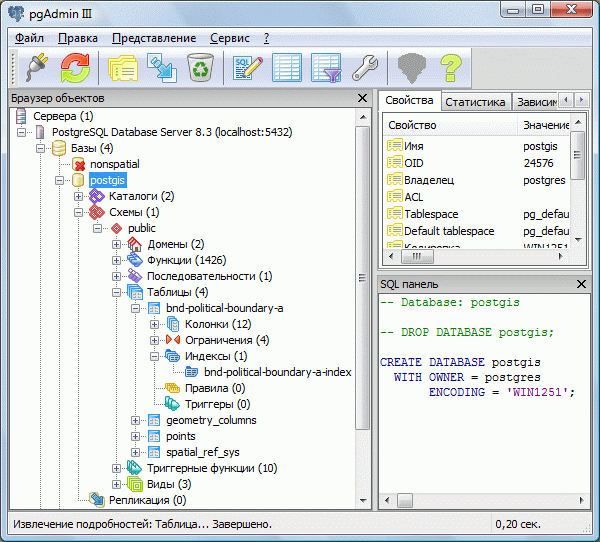
Затем в окне запросов SQL выполним команду:
VACUUM ANALYZE;
На самом деле это две разных команды: VACUUM и ANALYZE. Команды VACUUM и ANALYZE следует выполнять регулярно для восстановления дискового пространства, занятого измененными или удаленными записями и для обновления информации о распределении данных в таблице соответственно. Информация, полученная в результате выполнения команды ANALYZE, используется оптимизатором для выбора наиболее быстрого плана выполнения запроса.
На этом процесс создания пространственного индекса закончен.
Использование пространственных индексов
Необходимо помнить, что пространственные индексы автоматически не используются при произвольных пространственных запросах, они наиболее эффективны при определении пересечений областей. Остановимся на этом моменте поподробней. Системы управления пространственными базами данных (СУПБД), в том числе PostgreSQL, обрабатывают запросы диапазонов на основе парадигмы фильтрации и очистки. Этот процесс состоит из двух этапов. На первом этапе запрашиваемые объекты представляются своими минимальными ограничивающими прямоугольниками (MBR, minimal bounding rectangles). Смысл этого состоит в том, что найти пересечение области запроса и прямоугольника легче (менее накладно с вычислительной точки зрения), чем пересечение области запроса и произвольного пространственного объекта неправильной формы. Если область запроса – прямоугольник, то для выяснения того, пересекаются ли два прямоугольника, потребуется не боле трех вычислений. Этот этап называется фильтрацией, поскольку именно тогда устраняются многие «кандидаты». Второй этап состоит в обработке результата, полученного во время фильтрации, с использованием точных геометрических построений. Процесс очистки требует значительных вычислительных ресурсов, однако благодаря этапу фильтрации входное множество на этом шаге имеет невысокую мощность. Стратегию фильтрации-очистки иллюстрирует следующий рисунок:
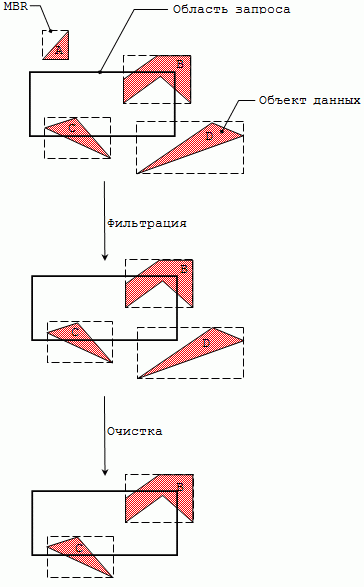
В PostGIS процесс фильтрации, осуществляющийся с использованием пространственных индексов, использует оператор «&&». Сущность этого оператора отражает следующийрисунок:
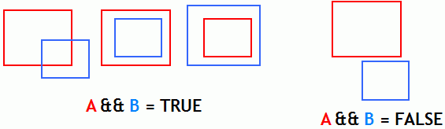
Функции пространственного сравнения (ST_Intersects(), ST_DWithin(), ST_Contains() и другие) автоматически используют оператор «&&». Также существуют и неиндексированные варианты этих функций, они отличаются от вышеописанных тем, что при их написании используется префикс «_»: _ST_Intersects(), _ST_DWithin(), _ST_Contains().
Тестирование пространственных индексов
А теперь давайте сравним скорость выполнения запросов с использованием пространственных индексов и без. В окне SQL запросов выполним следующие команды. Запрос без использования пространственного индекса:
SELECT nam FROM "bnd-political-boundary-a"
WHERE
_ST_Crosses(
the_geom,
ST_GeomFromText('LINESTRING(80 49, 80 51)', 4326));
Запрос с использованием пространственного индекса:
SELECT nam FROM "bnd-political-boundary-a"
WHERE
ST_Crosses(
the_geom,
ST_GeomFromText('LINESTRING(80 49, 80 51)', 4326);
Эти запросы определяет имя объекта (nam), форма которого (the geom) пересекается (ST_Crosses) с линией ('LINESTRING(80 49, 80 51)'). Функция ST_GeomFromText() возвращает тип геометрии объекта, заданного в формате WKT с указанием SRID. Выполните оба этих запроса и сравните время их выполнения (таймер находится в правом нижнем углу окна SQL запросов). Время выполнения второго запроса будет в несколько раз меньше, чем первого, тем самым свидетельствуя о том, что использование пространственных индексов позволяет значительно сократить время выполнения запроса.
Индексы и планы запросов
СУБД создавались для работы с большими объемами данных, хранящимися на жестких дисках. Процесс получения данных с жестких дисков очень медленный (по сравнению с ОЗУ), именно поэтому ядро любой СУБД спроектировано таким образом, чтобы обеспечить получение как можно большего объема данных при наименьшем количестве обращений к жесткому диску. Планы запросов представляют собой правила, используемые СУБД для преобразования SQL-запроса в стратегию доступа к данным. В PostgreSQL можно ознакомиться с планом запроса, использовав перед его началом ключевое слово «EXPLAIN». Для получения оценки выполнения запроса, в его начале следует ввести «EXPLAIN ANALYZE». В pgAdmin существует инструмент, позволяющий визуализировать план запроса. Для этого необходимо нажать на иконку 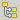.
Посмотрим, что покажет нам план запроса, не использующего пространственный индекс:
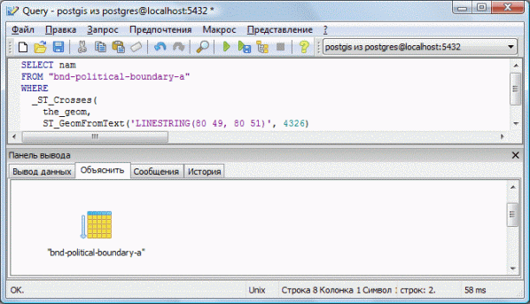
Полученный результат говорит о том, что для выполнения запроса будет проведено полное сканирование всей таблицы bnd-political-boundary-a.
А теперь обратимся к плану этого же запроса, только использующего пространственные индексы:
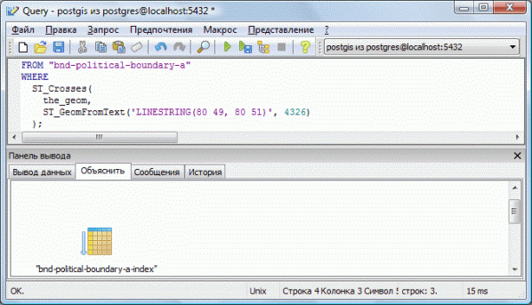
Из рисунка видно, что для выполнения запроса будет проведено сканирование только индекса
bnd-political-boundary-a-index.
Большинство стандартных задач ГИС-анализа можно решить с использованием пространственных баз данных. Рассмотрим несколько примеров использования PostGIS на примере имеющейся у нас пространственной таблицы bnd-political-boundary-a. Поскольку геометрические данные этой таблицы выражены в десятичных градусах, то практической значимости рассчитанные величины иметь не будут, однако нам этого и не нужно.
Вычисление периметра Алтайского края
В результате выполнения этого запроса будет рассчитан периметр Алтайского края (30.9082067657417).
Вычисление площади РФ
SELECT Sum(ST_Area(the_geom)) AS area FROM "bnd-political-boundary-a";
В результате выполнения этого запроса будет рассчитана площадь РФ (2925.11361671992).
Дата создания: 29.10.2008
Автор(ы): Денис Рыков